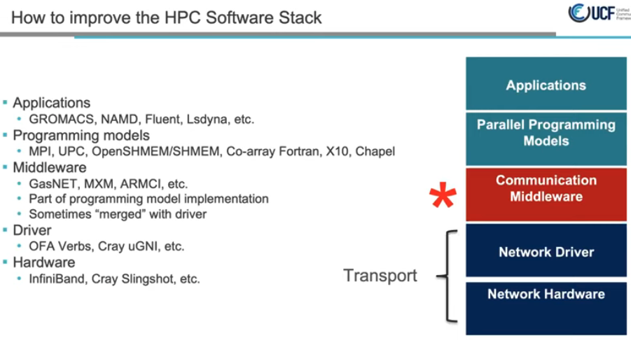
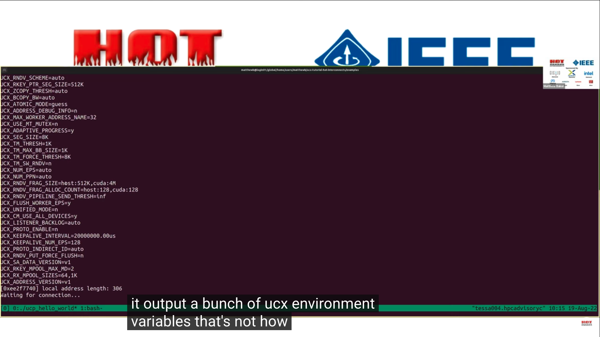

统一通信 X(UCX) 实现高性能便携式网络加速-UCX入门教程HOTI2022
统一通信 X(UCX) 实现高性能便携式网络加速-UCX入门教程HOTI2022
UCX - 有史以来最好的通信库
UCX参考链接
官方文档: https://openucx.readthedocs.io/en/master/
设计文档及设计思想(以传输层为例): https://github.com/openucx/ucx/wiki/UCT-Design
项目主页: https://github.com/openucx/ucx
观看 SC'19 会议上的 UCX 演示，了解有关 UCX 及其最新发展状况的更多信息: https://www.youtube.com/watch?v=H2d1CkGXJ64
演讲: https://ucfconsortium.org/presentations/
视频链接: https://www.youtube.com/watch?v=Yv9nW0Qyjys&t=2713s
术语
UCF Unified Communication Framework 统一通信框架, https://ucfconsortium.org/, 统一通信框架 - 行业、实验室和学术界之间的协作，为以数据为中心的高性能应用程序创建生产级通信框架和开放标准, 关于中佛罗里达大学, 开放式通信框架是协同设计的重要推动者，为异构协同处理元素的创新和开发提供了机会，异构协同处理元素可以协同、无缝地协同工作，从而为百亿亿级计算及其他计算实现强大而强大的生态系统。多核处理架构、定制 FPGA 处理元件、互连智能和数据感知存储的出现只是一些关键技术，这些技术依赖于在此类框架内有效通信的能力，以实现其能力的潜力。
演讲: https://ucfconsortium.org/presentations/
博客: https://ucfconsortium.org/blogs/
项目主页: https://github.com/openucx/ucx/wiki, 基础组件: https://github.com/openucx/ucx/wiki/Infrastructure-and-Tools, 高层设计: https://github.com/openucx/ucx/wiki/High-Level-design
架构
Architecture

组件简介
| Component | Role | Description |
|---|---|---|
| UCP | Protocol | 实现高级抽象，例如标签匹配，流，连接协商和建立，多路径以及处理不同的内存类型 |
| UCT | Transport | 实现低级通信语义，例如活动消息，远程内存访问和原子操作 |
| UCS | Services | 用于常用的数据结构，算法和系统实用程序的集合 |
| UCM | Memory | 拦截内存分配和释放事件，该事件由内存注册缓存使用 |
以下为视频部分内容: 封面-欢迎来到UCX教程 2022
Nvidia MLX 等5位大牛项目作者简介
Jeffrey Young（佐治亚理工学院）、Yossi Itigin (NVIDIA)、Matthew Baker（橡树岭国家实验室）、Oscar Hernandez (NVIDIA/Mellanox)
oscar hernandez on behalf of gilad shainer ucf
议题
- UCX教程和生态
- UCX基本网络简介, worker, endpoint的创建
使命-人工智能, GPU, DPU, 点到点通信, 机器学习
- 工作组, 其他项目
- 重要成员, 每月交流
- 加入链接
- 诞生于2012年
历史
- 低级可扩展, 高性能, 兼容性, 高效的通信框架
解决什么问题
- host内存如cpu与加速设备, 如gpu, dpu等间的数据传输
两层架构设计
- 高层, UCP, 专注与协议
- 低层, UCT, 传输层, 专注于不同的硬件
广泛兼容性
用户示例
- 华为 MPI, NVIDIA NCCL, 人工智能, 算法模型等
链接
TCP VS IB
零拷贝内存和临时缓冲区
高级通信语义
软件栈

RMA PUT操作延迟降低5~6倍
网络编程接口
使命
- 拥有良好代码设计的下一代网络通讯接口
UCX的创新点
四大服务之UCP
一对多, 通过带外网络交换work_address
实现hello_world,初始化,work建连, 端点建连, 发送/接收数据(RDMA的put/get), 销毁连接
github example
- 安装脚本
server:

client
- code
内存管理
- mem_map
- rkey_pack
- rkey_unpack
- put_nbx
- tag_send_nbx
- tag1, tag2, tag3, 按序
- tag_recv_nbx
- ucs_status_ptr_t
- tag_send_sysnc_nbx, no_block
- atomic_op_nbx, swap, replace remote, compare_and_swap
操作
附录
征文：OpenSHMEM 及相关技术 2022 研讨会
http://openshmem.org/workshops/ort2022/
仅限虚拟/在线活动
日期：2022年9月20日至22日
重要更新
UCF 2022研讨会 上的 OpenSHMEM 会议已接受 ORT 2022 的提交。我们将单独联系作者，询问这是否适合他们。
征文
OpenSHMEM 研讨会是一项年度活动，致力于利用 OpenSHMEM 编程接口和相关技术推广和推进并行编程。它是讨论和展示与 OpenSHMEM 及其应用相关的最新发展、实现技术、工具、趋势、最新研究想法和结果的首要场所。该研讨会将重点关注 OpenSHMEM 及其生态系统一部分的相关技术，例如 PGAS 语言、通信框架、工具和应用程序体验。我们还将重点关注编程模型扩展，以提高使用加速器和智能网络的系统的可编程性，以及提高互连效率的扩展。虽然这是一个特定于 OpenSHMEM 的研讨会，
-
当前 OpenSHMEM 规范的潜在增强功能
-
- OpenSHMEM 的加速器规格版本
- 容错能力
- 运行时检查
- 性能分析工具
-
低级通信框架和库
-
PGAS 语言和新兴编程模型
-
- 朱莉娅、教堂、鲁斯特等
-
在计算存储中利用 OpenSHMEM/UCX/Communications 库
-
（当前网络和实施的）可扩展性或性能问题
-
影响 PGAS（非对称内存）的先进内存技术
-
- 支持非易失性、高带宽和其他类型内存的扩展
-
OpenSHMEM/PGAS 及其对 ML/AI/大数据/(I/O) 支持的价值
-
OpenSHMEM、Rust 和 PGAS 语言的应用程序经验
-
- 具有任何领域应用程序的经验，尤其是动态和不规则应用程序
-
混合编程模型：OpenSHMEM 与基于任务的模型（例如 OCR、HPX、ParSEC）或异构模型（例如 OpenCL、OpenACC、CUDA、OpenMP）相结合
-
在新架构上实施 OpenSHMEM 的经验
-
提高网络利用率的电力/能源研究
-
OpenSHMEM 和网络软件堆栈的验证和验证套件
-
自动调整或优化策略
-
与运行时环境和调度程序集成
-
基准（例如 OpenHPCA）、性能评估和验证套件
-
统一通信 X (UCX)、UCX-Py、UCX-Java、UCX-Go
-
统一通信集体 (UCC)
-
数据处理单元 (DPU) / SmartNIC API
-
在 UCX 之上实施的机器学习和数据科学框架
-
- 与 Apache Spark、Apache Arrow、BlazingSQL、Dask/RAPIDS 等集成。
-
科学图书馆、FFT 等的网络卸载
重要的日子
“OpenSHMEM 及相关技术”将于 2022 年 9 月 20 日至 22 日在UCF 2022研讨会 期间举行。
论文提交详情
会议记录将出版在 LNCS Springer 卷中，并将由项目委员会进行同行评审。所有作者必须首先提交 250 字的摘要来注册他们的论文。摘要一旦被接受，我们将鼓励作者提交全文或短文。我们接受12-15页的全文和6-8页的短文。优先考虑全文。论文需要按照单栏样式进行格式化。请使用适用于 LaTeX 和 Word 的论文模板 ( https://www.springer.com/gp/authors-editors/conference-proceedings/conference-proceedings-guidelines )。版权需要转让给施普林格。将向作者提供版权表格，允许用户自行存档。
摘要和论文应在此处上传： https ://easychair.org/conferences/?conf=openshmem2022 。
主席
- 斯蒂芬·普尔，LANL
指导规划委员会
- 奥斯卡·埃尔南德斯，NVIDIA
- 帕维尔·沙米斯，ARM
- 马修·贝克，战神金刚数据
- 曼朱纳特·戈伦特拉·文卡塔，NVIDIA
- 迈克尔·雷蒙德，HPE
- 布莱恩特·林，国防部
- 尼克·帕克，国防部
技术委员会成员
- Pavel Shamis，ARM，主席
- 纳文·纳马什瓦亚姆 (Naveen Namashivayam)，HPE
- 迈克尔·雷蒙德，HPE
- 詹姆斯·迪南，NVIDIA
- 吉利德谢纳，英伟达
- 曼朱纳特·戈伦特拉·文卡塔，NVIDIA
- 哈立德·哈米杜什 (Khaled Hamidouche)，AMD
- Camille Cotte，俄勒冈大学/巴黎
- 萨米尔·申德，UoO
- 布罗迪·威廉姆斯，TTU
- 马修·贝克，战神金刚数据
- 斯文·伯姆，ORNL
- 奥斯卡·埃尔南德斯 (Oscar Hernandez)，NVIDIA 联合主席
- 斯瓦鲁普·波菲尔 (ORNL)
- 斯敏，梅塔
- 达巴勒斯瓦尔熊猫，俄勒冈州立大学
- 托尼·柯蒂斯，SBU
- 帕万·巴拉吉，梅塔
- 斯蒂芬·普尔，LANL
- 霍华德·普里查德，LANL
- 温迪·普尔，LANL
- 尼克·帕克，国防部
- 布莱恩特·林，国防部
- 马塞尔·法莱，国防部
- 托马斯·罗林格，国防部
- 柯蒂斯·休伊，国防部
- 杰西卡·史蒂菲，国防部
- 亚历克斯·马戈林 (Alex Margolin)，NextSilicon
- 马克斯·格罗斯曼，GTRC
- 佐藤光久理研
- 杰夫·库恩，AMD
- Yangei Guo, ANL
- 马修·多桑吉 (SNL)
- 佩里·施密特，IBM
高层架构设计
主页 双周电话会议 贡献者指南 代码风格检查 UCF Collectives WG
在本地克隆此 wiki
UCX代码由3部分组成：
- 协议层*-UCP*
- 传输层*-UCT*
- 服务*-UCS*

协议层
支持 API 中描述的所有功能，并且不需要特定硬件的知识。它将尝试结合不同的硬件机制和传输来提供最佳的“开箱即用”性能。它可以模拟硬件不直接支持的功能，例如单向操作。此外，它将支持未在硬件中实现的常见软件协议，例如标签匹配和通用活动消息。更多详情请点击此处
传输层
提供对硬件功能的直接访问，无需决策逻辑，决策逻辑会优先选择一种硬件机制而不是另一种硬件机制。由于硬件限制，某些功能可能不受支持。功能在界面中公开。 更多详细信息请参见此处。
服务
通用服务、数据结构、调试辅助工具等的集合。
各层职责
| What | Where 层级 | Why |
|---|---|---|
| Tag matching 标签匹配 | High level | Software protocol |
| RMA/AMO emulation 远程内存访问/原子内存操作 | High level | Software protocol |
| Fragmentation 分段 | High level | Software protocol |
| Pending queue 阻塞队列 | High level | Stateful |
| Multi-transport/channel/rail 多路径/多传输层/多通道 | High level | OOB optimization |
| Select inline/bcopy/zcopy 可选的内联/缓冲区拷贝/零拷贝 | High level | optimization logic |
| Reliability (e.g UD) 可靠数据报 | Low level | Transport specific |
| DMA buffer ownership DMA缓冲区所有权 | Low level | Transport specific |
| Memory registration cache 内存注册缓存 | Low level | Transport dependent |
也可以看看：
UCX - 有史以来最好的通信库
基础设施和工具
Artemy-Mellanox 编辑了此页面2022 年 1 月 5 日 · 7次修订
页数93
主页 双周电话会议 贡献者指南 代码风格检查 UCF Collectives WG
在本地克隆此 wiki
工具
基础设施库（UCS）
- 异步
- 配置解析
- 内存挂钩
- 数据结构：
- 双链表
- 单链队列
- 片段列表 - 重新排序
- 内存池
- 索引/指针数组
- SGLIB
- 调试：
- 统计数据
- 快速时间测量
- 读取CPU定时器
- 将时间转换为秒/毫秒/微秒/纳秒
- 定时器队列
- 定时器轮
- 数据类型：
- 打回来
- 类基础设施
- 组件基础设施
- 自旋锁
- 错误代码
- 系统服务：
- 原子操作
- 快速位运算（查找第一个设置位，整数 log2）
- 获取主机名
- 生成UUID
- 获取CPU关联性
- 读取整个文件
- 获取页面/大页面大小
- 使用 SystemV 分配内存
- 获取内存区域访问标志（来自/proc/$$/maps）
- 使用 fcntl 修改文件标志
- 获取进程命令行
- 获取CPU型号、时钟频率
- 获取线程ID
UCX - 有史以来最好的通信库
UCF成员
UCF简介
使命： • 工业界、实验室和学术界之间的合作，创建生产级通信框架和 以数据为中心的高性能应用程序的开放标准 项目 • UCX – 统一通信 X – www.openucx.org • SparkUCX – www.sparkucx.org • 开放RDMA 董事会成员 • Jeff Kuehn，UCF 主席（洛斯阿拉莫斯国家实验室） • Gilad Shainer，UCF 总裁（Mellanox Technologies） • Pavel Shamis，UCF 财务主管（部门） • Brad Benton，董事会成员 (AMD) • Duncan Poole，董事会成员 (Nvidia) • Pavan Balaji，董事会成员（阿贡国家实验室） • Sameh Sharkawi，董事会成员 (IBM) • Dhabaleswar K. (DK) Panda，董事会成员（俄亥俄州立大学） • Steve Poole，董事会成员（开源软件解决方案）
官方文档
主要功能: https://github.com/ssbandjl/ucx/blob/master/docs/source/ucx_features.rst
UCX主要特点
高级 API 功能
- 选择客户端/服务器连接建立（类似于 TCP），或通过传递远程地址 blob 直接连接。
- 支持线程之间共享资源，或为每个线程分配专用资源。
- 事件驱动或轮询驱动的进度。
- Java 和 Python 绑定。
- 无缝处理 GPU 内存。
主要API
- 面向流的发送/接收操作。
- 标签匹配的发送/接收。
- 远程内存访问。
- 远程原子操作。
fabric支持
- RoCE
- InfiniBand
- TCP sockets
- Shared memory (CMA, knem, xpmem, SysV, mmap)
- Cray Gemini / Aries (ugni)
平台支持
- 支持的架构：x86_64、Arm v8、Power。
- 在虚拟机（使用 SRIOV）和容器（docker、奇点）上运行。
- 可以利用 MLNX_OFED 或内置 RDMA 驱动程序。
- 在主要 Linux 发行版 (RedHat/Ubuntu/SLES) 上进行了测试。
GPU支持
- Cuda（用于 NVIDIA GPU）
- ROCm（适用于 AMD GPU）
协议、优化和高级功能
- 自动选择最佳传输和设备
- 用注册缓存实现零拷贝
- 可扩展的流量控制算法
- 优化的内存池
- 为Mellanox 设备加速直接verbs传输
- GPU内存的管道协议
- RDMA 传输的 QoS 和流量隔离
- 平台（微架构）特定的优化（例如memcpy内存拷贝, memory barriers内存屏障等）
- 多网卡(网络通道)和 RoCE 链路聚合组的支持
- 裸机、容器和云环境支持
- 用于传输不同大小消息的高级协议
Glossaries 术语
| Keyword | Description | |
|---|---|---|
| ACK | Acknowledge | 确认, 收到消息后的确认 |
| AM | Active Message | |
| AMO | Atomic Memory Operation | 原子内存操作 |
| ANL | Argonne National Laboratory | 阿贡国家实验室 |
| AZP | Azure Pipeline | |
| bcopy | Buffered copy | |
| Bistro | Binary Instrumentation | |
| BTL | Open MPI’s Byte Transfer Layer | |
| CM | Connection Manager | |
| CMA | Linux Kernel Cross Memory Attach | |
| CQ | Completion Queue (InfiniBand) | |
| CQE | Completion Queue Entry (InfiniBand) | |
| csmock | static analysis tools | |
| CUDA | Compute Unified Device Architecture (NVIDIA) | |
| DC | Dynamically Connected transport (Mellanox/Nvidia InfiniBand) | |
| DPM | Direct Packet Mode | |
| EP | EndPoint | |
| FC | Flow Control | |
| FD | File Descriptor | |
| GDR | GPUDirect RDMA | |
| gtest | Google Test | |
| HPC | High Performance Computing | |
| HWTM | HardWare Tag Matching | |
| IB | InfiniBand | |
| iface | Interaface | |
| IPC | Inter Process Communication | |
| JUCX | Java API over UCP | |
| KLM | A new sophisticated way of creating memory regions (Mellanox) | |
| KNEM | Inria’s Kernel module for process to process zero copy (https://knem.gitlabpages.inria.fr) | |
| LDPM | Legacy DPM | |
| LLNL | Lawrence Livermore National Laboratory | |
| madvise | give advice about use of memory. See madvise(2) | |
| MD | Memory Domain | |
| MEMH | Memory Handle | |
| MLX | Mellanox Technologies | |
| mlx5 | Mellanox-5 generation of Mellanox device driver | |
| MM | Memory Mapper | |
| MP-XRQ | Multi-Packet XRQ | |
| MPI | Message Passing INterface | |
| MPICH | ANL MPI Implementation | |
| MTT | The MPI Testing Tool | |
| NAK | Negative Acknowledge | |
| NB | Non blocking operations | |
| NBI | Non blocking implicit | |
| NBX | Non blocking extended | |
| ODP | OnDemand Paging | |
| OFA | OpenFabrics Alliance | |
| OMPI | OpenMPI | |
| OOB | Out of band / Out of box | |
| OOO | Out of Order | |
| OPA | Omni-Path Architecture | |
| Open MPI | A MPI Implementation | |
| ORNL | Oak Ridge National Laboratory | |
| PCIe | PCI Express | |
| PFN | Physical Frame Number | |
| PGAS | Partitioned Global Address Space | |
| POSIX | Portable operating system interface | |
| ppn | processes per node | |
| PR | Pull Request | |
| QP | Queue Pair (InfiniBand) | |
| RC | Reliable Connection (InfiniBand) | |
| rcache | Registration Cache | |
| RDMA | Remote Direct Memory Access | |
| REQ | Request | |
| rkey | Remote KEY | |
| RMA | Remote Memory Access | |
| RNDV | Rendezvous protocol | |
| RnR | Receiver Not Ready | |
| RoCE | RDMA over Converged Ethernet | |
| ROCm | Radeon Open Compute platform (AMD) | |
| RTE | Run Time Environment | |
| RX | Receive | |
| skb | Socket Buffer | |
| SM | Shared Memory | |
| SM | Subnet Manager (InfiniBand) | |
| SockCM | Socket Connection Manager | |
| SRQ | Shared Receive Queue | |
| SysV | UNIX System V | |
| TL | Transport Layer | |
| TLS | Transpot LayerS | |
| TM | Tag Matching | |
| TX | Transmit | |
| UC | Unreliable Connection (InfiniBand) | |
| UCC | Unified Collective Communications | |
| UCD | Unified Communication Datatypes | |
| UCF | Unified Communication Framework | |
| UCM | Unified Communication Memory | |
| UCP | Unified Communication Protocols Higher level API | |
| UCS | Unified Communication Service Common utilities | |
| UCT | Unified Communication Transport Lower level API | |
| UCX | Unified Communication X | |
| UD | Unreliable Datagram (InfiniBand) | |
| uGNI | user level generic network interface (Cray) | |
| UMR | User mode memory registration | |
| VPI | Virtual Protocol Interconnect | |
| WFE | Wait for event | |
| WIP-DNM | Work-in-Progress-Do-Not-Merge | |
| WQ | Work Queue (InfiniBand) | |
| WQE | Work Queue Elements (pronounce WOOKIE) | |
| WR | Work Request | |
| XPMEM | XPMEM Linux kernel module originally developed by SGI implementing cross process memory mapping with zero copy | |
| XRC | eXtended Reliable Connection (InfiniBand) | |
| XRCD | XRC Domains | |
| XRQ | Mellanox Shared Receive Queue | |
| Zcopy | Zero Copy |
FAQ
经常问的问题
一般的
概述
什么是UCX？
UCX 是一个框架（库和接口的集合），提供高效且相对简单的方法来构建广泛使用的 HPC 协议：MPI 标签匹配、RMA 操作、会合协议、流、碎片、远程原子操作等。
什么是UCP、UCT、UCS？
- UCT是一个传输层，它抽象了各种硬件架构之间的差异，并提供了支持通信协议实现的低级 API。该层的主要目标是以最小的软件开销提供对硬件网络资源的直接有效的访问。为此，UCT 依赖于低级驱动程序，例如 uGNI、Verbs、共享内存、ROCM、CUDA。此外，该层还提供通信上下文管理（基于线程和应用程序级别）以及设备特定存储器（包括加速器中的存储器）的分配和管理的构造。在通信 API 方面，UCT 定义了立即（短）、缓冲复制和发送（bcopy）和零复制（zcopy）通信操作的接口。短操作针对可以就地发布和完成的小消息进行了优化。bcopy 操作针对通常通过所谓的弹跳缓冲区发送的中等大小的消息进行了优化。最后，zcopy 操作公开零复制内存到内存通信语义。
- UCP通过使用通过 UCT 层公开的较低级别功能来实现消息传递 (MPI) 和 PGAS 编程模型通常使用的较高级别协议。UCP 负责以下功能：库的初始化、通信传输的选择、消息分段和多轨通信。目前，API 具有以下几类接口：初始化、远程内存访问 (RMA) 通信、原子内存操作 (AMO)、活动消息、标签匹配和集合。
- UCS是一个服务层，为实现可移植且高效的实用程序提供必要的功能。
我怎样才能做出贡献？
- fork
- 修复错误或实施新功能
- 打开拉取请求
如何与 UCX 开发人员取得联系？
请加入我们的邮件列表：https://elist.ornl.gov/mailman/listinfo/ucx-group 或在 github 上提交问题：https://github.com/openucx/ucx/issues
UCX使命
UCX 的主要特点是什么？
- 供应商支持的开源框架除了开源社区之外，UCX 框架还由硬件供应商维护和支持。每个拉取请求都经过测试，并且供应商社区支持多个硬件平台。
- 表演、表演、表演！ 框架架构、数据结构和组件旨在提供对网络硬件的优化访问。
- **适用于各种 HPC 编程模型的高级 API。**UCX 提供高级且性能可移植的网络 API。该 API 针对各种编程模型，从高性能 MPI 实现到 Apache Spark。UCP API 抽象了差异并填补了 UCT 层中实现的互连之间的空白。因此，编程模型和库（MPI、OpenSHMEM、Apache Spark、RAPIDS 等）的实现得到简化，同时为多种互连（uGNI、Verbs、TCP、共享内存、ROCM、CUDA 等）提供有效支持。
- **支持多个传输（或提供者）之间的交互以传递消息。**例如，UCX 具有使“GPUDirect”、IB”和共享内存有效地协同工作的逻辑（在 UCP 中），以便在需要的地方传递数据，而无需用户处理。
- **跨运输多轨能力。**UCX 协议层可以利用多种传输、不同类型硬件上的事件来更快地传递消息，而不需要任何特殊的调整。
- 利用硬件卸载来优化性能，例如RDMA、硬件标签匹配硬件原子操作等。
UCX 支持哪些协议？
UCP 实现 RMA put/get、带标签匹配的发送/接收、活动消息、原子操作。在不久的将来，我们计划增加对常用集体操作的支持。
UCX 会替代 GASNET 吗？
不会。GASNET 公开了用于 PGAS 编程管理的高级 API，它提供了对称内存管理功能并构建在运行时环境中。这些功能超出了 UCX 项目的范围。相反，GASNET 可以利用 UCX 框架快速高效地实现 GASNET，以获得 UCX 支持的网络技术。
UCX 和网络驱动程序之间有什么关系？
UCX框架不提供驱动程序，而是依赖于供应商提供的驱动程序。目前我们使用：OFA VERBs、Cray 的 UGNI、NVIDIA CUDA。
UCX 和 OFA Verbs 或 Libfabrics 之间有什么关系？
UCX是一个依赖于设备驱动程序的中间件通信框架，例如RDMA、CUDA、ROCM。RDMA 和绕过操作系统的网络设备通常使用 UCX 支持的 RDMA 核心 Linux 子系统来实现设备驱动程序。可以根据社区的请求和贡献添加对其他网络抽象的支持。
UCX是用户级驱动程序吗？
UCX 不是用户级驱动程序。通常，驱动程序旨在公开对网络体系结构特定功能的细粒度访问。UCX 抽象了各种驱动程序之间的差异，并使用软件协议填补了某些不为所有操作提供硬件级支持的体系结构的空白。
依赖关系
我的机器上应该有什么东西才能使用 UCX？
UCX 检测构建机器上的现有库，并相应地启用/禁用对各种功能的支持。如果在运行时找不到构建 UCX 的某些模块，它们将被静默禁用。
- 基本共享内存和 TCP 支持- 始终启用。
- 优化共享内存- 需要 knem 或 xpmem 驱动程序。在现代内核上，如果可用，也将使用 CMA（跨内存附加）。
- RDMA 支持- 需要 rdma-core 或 libibverbs 库。UCX >= 1.12.0 需要 rdma-core >= 28.0 或 MLNX_OFED >= 5.0。
- NVIDIA GPU 支持- 需要 CUDA >= 6.0。UCX >= 1.8 需要具有 nv_peer_mem 支持的 CUDA。
- AMD GPU 支持- 需要 ROCm 版本 >= 4.0。
UCX 是否依赖于外部运行时环境？
UCX 不依赖于外部运行时环境。
ucx_perftest（基于 UCX 的应用程序/基准）可以与可用于远程ucx_perftest启动的外部运行时环境链接，但这是一个可选配置，仅用于不提供对计算节点的直接访问的环境。默认情况下此选项被禁用。
配置和调整
如何为 UCX 指定特殊配置和调整？
UCX 从特定环境变量中获取参数，这些参数以前缀开头UCX_。
**重要提示：**将 UCX 环境变量设置为非默认值可能会导致未定义的行为。环境变量主要供高级用户使用，或者用于 UCX 社区推荐的特定调整或解决方法。
在哪里可以查看所有 UCX 环境变量？
- 运行会打印所有环境变量及其默认值。
ucx_info -c - 运行会打印所有环境变量的文档。
ucx_info -cf
UCX配置文件
UCX 在 中查找配置文件{prefix}/etc/ucx/ucx.conf，其中{prefix}是编译时配置的安装前缀。它允许自定义各种参数。环境变量优先于 中定义的值ucx.conf。该文件可以使用创建。ucx_info -Cf
使用 UCX 构建用户应用程序
为了使用 UCX 开发库构建应用程序，UCX 支持基于 pkg-config 工具的元信息子系统。例如，这就是如何将 pkg-config 合并到基于 Makefile 的构建中：
program: program.c
$(CC) program.c $(shell pkg-config --cflags --libs ucx)
当与静态 UCX 库链接时，用户必须明确列出所有必需的传输模块。例如，为了仅支持 cma 和 knem 传输，用户必须使用：
program: program.c
$(CC) -static program.c $(shell pkg-config --cflags --libs --static ucx-cma ucx-knem ucx)
目前，以下传输模块可以与 pkg-config 一起使用：
| 包裹名字 | 提供交通服务 |
|---|---|
| ucx-cma | 使用Linux Cross-Memory Attach共享内存 |
| ucx-knem | 使用高性能节点内 MPI 通信的共享内存 |
| ucx-xpmem | 使用XPMEM共享内存 |
| ucx-ib | 基于Infiniband的网络传输 |
| ucx-rdmacm | 基于RDMACM的连接管理器 |
TCP、基本共享内存和自传输都内置于 UCT 中，不需要额外的编译操作。
重要的提示：
ucx-ib 包需要libnl和 的静态库numactl，作为 的依赖项rdma-core。大多数Linux发行版默认不提供这些静态库，因此需要手动构建和安装它们。可以从以下位置下载它们：
| 库 | https://www.infradead.org/~tgr/libnl | （在3.2.25版本上测试） |
|---|---|---|
| 数字 | https://github.com/numactl/numactl | （在2.0.14版本上测试） |
网络能力
选择网络和传输
UCX 使用哪些网络设备？
默认情况下，UCX 尝试使用计算机上的所有可用设备，并根据性能特征（带宽、延迟、NUMA 位置等）选择最佳设备。设置将限制 UCX仅UCX_NET_DEVICES=<dev1>,<dev2>,...使用 指定的设备。例如：
UCX_NET_DEVICES=eth2- 使用以太网设备 eth2 进行 TCP 套接字传输。UCX_NET_DEVICES=mlx5_2:1- 使用 RDMA 设备 mlx5_2，端口 1
运行将显示 UCX 可以使用的系统上的所有可用设备。ucx_info -d
UCX 使用哪些传输方式？
默认情况下，UCX 尝试使用所有可用的传输，并根据性能和规模选择最佳传输（作为估计的端点数量传递给ucp_init() API）。例如：
- 在仅具有以太网设备的机器上，共享内存将用于节点内通信，TCP 套接字用于节点间通信。
- 在具有 RDMA 设备的机器上，RC 传输将用于小规模，DC 传输（可用于 Connect-IB 设备及以上）将用于大规模。如果没有DC，则大规模使用UD。
- 如果机器上存在 GPU，则将启用 GPU 传输来检测内存指针类型并复制到 GPU 内存或从 GPU 内存复制。
可以通过设置来限制使用的传输UCX_TLS=<tl1>,<tl2>,...。 ^一开始将列表变成拒绝列表。可以通过命令生成当前机器上UCX支持的所有传输的列表。ucx_info -d
重要提示 在某些情况下，限制传输可能会导致意外和未定义的行为：
- 使用rc_verbs或rc_mlx5还需要ud_verbs或ud_mlx5传输进行引导。
- 使用 GPU 内存的应用程序还必须指定 GPU 传输来检测和处理非主机内存。
除了内置传输之外，还可以使用指定多个传输的别名。
主要传输(TL)和别名列表
| all | use all the available transports. |
|---|---|
| sm or shm | 所有共享内存传输 |
| ugni | ugni_rdma and ugni_udt. |
| rc | RC (=reliable connection), “accelerated” transports are used if possible. 可靠连接, 尽可能使用加速 |
| ud | UD (=unreliable datagram), “accelerated” is used if possible. 不可靠连接, 尽可能使用加速 |
| dc | DC - Mellanox scalable offloaded dynamic connection transport 迈络思可扩展卸载动态连接传输 |
| rc_x | Same as “rc”, but using accelerated transports only 类似可靠连接, 但仅使用加速传输 |
| rc_v | Same as “rc”, but using Verbs-based transports only 类似可靠连接, 但仅使用rdma verbs传输 |
| ud_x | Same as “ud”, but using accelerated transports only |
| ud_v | Same as “ud”, but using Verbs-based transports only |
| cuda | CUDA (NVIDIA GPU) memory support: cuda_copy, cuda_ipc, gdr_copy |
| rocm | ROCm (AMD GPU) memory support: rocm_copy, rocm_ipc, rocm_gdr |
| tcp | TCP over SOCK_STREAM sockets |
| self | Loopback transport to communicate within the same process 本地回环通信 |
例如：
UCX_TLS=rc将选择 RC、UD 进行引导，并且更喜欢加速传输UCX_TLS=rc,cuda将选择 RC 以及 Cuda 内存传输UCX_TLS=^rc将选择除 RC 之外的所有可用传输
重要提示
UCX_TLS=^ud将选择除 UD 之外的所有可用传输。不过，UD 仍可用于引导程序。只会UCX_TLS=^ud,ud:aux完全禁用UD。
多路径
UCX 支持多路径负载均衡吗？
是的。
多路径环境中的默认行为是什么？
默认情况下，UCX 会选择 2 个最好的网络设备，并在轨道之间分割大量消息。例如，在 100MB 消息中，第一个 50MB 将在第一台设备上发送，第二个 50MB 将在第二台设备上发送。如果设备网络速度不相同，则分割将与它们的速度比成正比。
根据最佳网络速度、PCI 带宽和 NUMA 位置来选择要使用的设备。
是否可以使用 2 条以上的导轨？
是的，通过设置UCX_MAX_RNDV_RAILS=<num-rails>. 目前最多支持 4 个。
每个进程是否有可能只使用最近的设备？
是的，UCX_MAX_RNDV_RAILS=1每个进程都会根据 NUMA 位置使用单个网络设备。
我可以禁用多轨吗？
是的，通过设置UCX_NET_DEVICES=<dev>为应使用的单个设备。
自适应路由
UCX 是否支持自适应路由结构？
是的。
我需要做什么才能运行带有自适应路由的 UCX？
当在 Infiniband 结构上配置自适应路由时，它会按 SL（IB 服务层）启用。设置UCX_IB_SL=<sl-num>将使 UCX 在给定的服务级别上运行并利用自适应路由。
ROCE
如何指定 UCX 的服务级别？
设置UCX_IB_SL=<sl-num>将使 UCX 在给定的服务级别上运行。
如何指定DSCP优先级？
设置UCX_IB_TRAFFIC_CLASS=<num>.
如何指定使用哪个地址？
设置UCX_IB_GID_INDEX=<num>将使 UCX 在 RoCE 端口上使用指定的 GID 索引。系统命令show_gids将打印所有可用地址及其索引。
使用 GPU
GPU支持
UCX如何支持GPU？
UCX 协议操作可以使用 GPU 内存指针，就像使用主机内存指针一样。例如，传递给的“buffer”参数ucp_tag_send_nb()可以是主机内存或 GPU 内存。
支持哪些 GPU？
目前 UCX 通过 Cuda 库支持 NVIDIA GPU，通过 ROCm 库支持 AMD GPU。
哪些 UCX API 支持 GPU 内存？
目前，只有 UCX 标记的 API、流 API 和活动消息 API 完全支持 GPU 内存。远程内存访问API，包括原子操作，对GPU内存的支持不完整；计划在未来版本中提供全面支持。
| 应用程序编程接口 | GPU显存支持级别 |
|---|---|
| 标签（ucp_tag_send_XX/ucp_tag_recv_XX） | 全力支持 |
| 流（ucp_stream_send/ucp_stream_recv_XX） | 全力支持 |
| 活动消息 (ucp_am_send_XX/ucp_am_recv_data_XX) | 全力支持 |
| 远程内存访问（ucp_put_XX/ucp_get_XX） | 部分支持 |
| 原子操作 (ucp_atomic_XX) | 部分支持 |
如何在 GPU 支持下运行 UCX？
为了在 GPU 支持下运行 UCX，您需要一个分配 GPU 内存的应用程序（例如， 支持 Cuda 的 MPI OSU 基准测试），并且需要使用 GPU 支持编译 UCX。然后，您可以照常运行应用程序（例如，使用 MPI），并且每当 GPU 内存传递到 UCX 时，它都会使用 GPU-direct 进行零复制操作，或者将数据复制到主机内存或从主机内存复制数据。
注意 当显式指定 UCX_TLS 时，还必须指定 cuda/rocm 的 GPU 内存支持，否则 GPU 内存将无法被识别。例如：
UCX_TLS=rc,cuda或UCX_TLS=dc,rocm
我使用 GPU 内存运行 UCX 并出现段错误，为什么？
UCX 很可能没有检测到该指针是 GPU 内存，并尝试从 CPU 访问它。如果 UCX 未使用 GPU 支持进行编译，或者由于缺少库路径或版本不匹配而无法加载 CUDA 或 ROCm 模块，则可能会发生这种情况。请运行或检查 UCX GPU 支持。ucx_info -d | grep cuda``ucx_info -d | grep rocm
在某些情况下，内部内存类型缓存可能会将 GPU 内存误检测为主机内存，从而导致无效的内存访问。可以通过设置禁用此缓存UCX_MEMTYPE_CACHE=n。
为什么我会收到错误“假设 PTX 是使用不受支持的工具链编译的”？
应用程序正在加载一个 cuda 二进制文件，该二进制文件是为比安装的 cuda 版本更新的版本编译的，并且通过来自 UCX 的 Cuda API 调用异步检测到故障。为了解决该问题，您需要安装更新的 cuda 版本或使用 nvcc 的适当 -arch 选项编译 cuda 二进制文件。请参阅 https://docs.nvidia.com/cuda/cuda-compiler-driver-nvcc/index.html#virtual-architecture-feature-list 了解-arch传递给 nvcc 的适当选项。
性能考虑
UCX 是否支持 RDMA 上的 GPU 内存零复制？
是的。对于大型消息，UCX 可以使用交会协议使用零复制 RDMA 传输 GPU 内存。它需要加载相关 GPU 类型的对等内存驱动程序，或者（从 UCX v1.14.0 开始）系统上的 dmabuf 支持。
**注意：**在某些情况下，如果 RDMA 网络设备和 GPU 不在同一 NUMA 节点上，则这种零拷贝传输效率较低。
dmabuf 支持需要什么？
- UCX v1.14.0 或更高版本。
- Linux 内核 >= 5.12（例如 Ubuntu 22.04）。
- Cuda 11.7 或更高版本，使用“-m=kernel-open”标志安装。
**注意：**当前 UCX 代码假设 dmabuf 支持在所有可用 GPU 设备上是统一的。
内省
协议选择
我如何知道哪些协议和传输正在用于通信？
-
设置
UCX_LOG_LEVEL=info打印有关传输和设备的基本信息：$ mpirun -x UCX_LOG_LEVEL=info -np 2 --map-by node osu_bw D D [1645203303.393917] [host1:42:0] ucp_context.c:1782 UCX INFO UCP version is 1.13 (release 0) [1645203303.485011] [host2:43:0] ucp_context.c:1782 UCX INFO UCP version is 1.13 (release 0) [1645203303.701062] [host1:42:0] parser.c:1918 UCX INFO UCX_* env variable: UCX_LOG_LEVEL=info [1645203303.758427] [host2:43:0] parser.c:1918 UCX INFO UCX_* env variable: UCX_LOG_LEVEL=info [1645203303.759862] [host2:43:0] ucp_worker.c:1877 UCX INFO ep_cfg[2]: tag(self/memory0 knem/memory cuda_copy/cuda rc_mlx5/mlx5_0:1) [1645203303.760167] [host1:42:0] ucp_worker.c:1877 UCX INFO ep_cfg[2]: tag(self/memory0 knem/memory cuda_copy/cuda rc_mlx5/mlx5_0:1) # MPI_Init() took 500.788 msec # OSU MPI-CUDA Bandwidth Test v5.6.2 # Send Buffer on DEVICE (D) and Receive Buffer on DEVICE (D) # Size Bandwidth (MB/s) [1645203303.805848] [host2:43:0] ucp_worker.c:1877 UCX INFO ep_cfg[3]: tag(rc_mlx5/mlx5_0:1) [1645203303.873362] [host1:42:a] ucp_worker.c:1877 UCX INFO ep_cfg[3]: tag(rc_mlx5/mlx5_0:1) ... -
使用协议v2时，设置
UCX_PROTO_INFO=y详细信息：$ mpirun -x UCX_PROTO_ENABLE=y -x UCX_PROTO_INFO=y -np 2 --map-by node osu_bw D D [1645027038.617078] [host1:42:0] +---------------+---------------------------------------------------------------------------------------------------+ [1645027038.617101] [host1:42:0] | mpi ep_cfg[2] | tagged message by ucp_tag_send*() from host memory | [1645027038.617104] [host1:42:0] +---------------+--------------------------------------------------+------------------------------------------------+ [1645027038.617107] [host1:42:0] | 0..8184 | eager short | self/memory0 | [1645027038.617110] [host1:42:0] | 8185..9806 | eager copy-in copy-out | self/memory0 | [1645027038.617112] [host1:42:0] | 9807..inf | (?) rendezvous zero-copy flushed write to remote | 55% on knem/memory and 45% on rc_mlx5/mlx5_0:1 | [1645027038.617115] [host1:42:0] +---------------+--------------------------------------------------+------------------------------------------------+ [1645027038.617307] [host2:43:0] +---------------+---------------------------------------------------------------------------------------------------+ [1645027038.617337] [host2:43:0] | mpi ep_cfg[2] | tagged message by ucp_tag_send*() from host memory | [1645027038.617341] [host2:43:0] +---------------+--------------------------------------------------+------------------------------------------------+ [1645027038.617344] [host2:43:0] | 0..8184 | eager short | self/memory0 | [1645027038.617348] [host2:43:0] | 8185..9806 | eager copy-in copy-out | self/memory0 | [1645027038.617351] [host2:43:0] | 9807..inf | (?) rendezvous zero-copy flushed write to remote | 55% on knem/memory and 45% on rc_mlx5/mlx5_0:1 | [1645027038.617354] [host2:43:0] +---------------+--------------------------------------------------+------------------------------------------------+ # MPI_Init() took 1479.255 msec # OSU MPI-CUDA Bandwidth Test v5.6.2 # Size Bandwidth (MB/s) [1645027038.674035] [host2:43:0] +---------------+--------------------------------------------------------------+ [1645027038.674043] [host2:43:0] | mpi ep_cfg[3] | tagged message by ucp_tag_send*() from host memory | [1645027038.674047] [host2:43:0] +---------------+-------------------------------------------+------------------+ [1645027038.674049] [host2:43:0] | 0..2007 | eager short | rc_mlx5/mlx5_0:1 | [1645027038.674052] [host2:43:0] | 2008..8246 | eager zero-copy copy-out | rc_mlx5/mlx5_0:1 | [1645027038.674055] [host2:43:0] | 8247..17297 | eager zero-copy copy-out | rc_mlx5/mlx5_0:1 | [1645027038.674058] [host2:43:0] | 17298..inf | (?) rendezvous zero-copy read from remote | rc_mlx5/mlx5_0:1 | [1645027038.674060] [host2:43:0] +---------------+-------------------------------------------+------------------+ [1645027038.680982] [host2:43:0] +---------------+------------------------------------------------------------------------------------+ [1645027038.680993] [host2:43:0] | mpi ep_cfg[3] | tagged message by ucp_tag_send*() from cuda/GPU0 | [1645027038.680996] [host2:43:0] +---------------+-----------------------------------------------------------------+------------------+ [1645027038.680999] [host2:43:0] | 0..8246 | eager zero-copy copy-out | rc_mlx5/mlx5_0:1 | [1645027038.681001] [host2:43:0] | 8247..811555 | eager zero-copy copy-out | rc_mlx5/mlx5_0:1 | [1645027038.681004] [host2:43:0] | 811556..inf | (?) rendezvous pipeline cuda_copy, fenced write to remote, cuda | rc_mlx5/mlx5_0:1 | [1645027038.681007] [host2:43:0] +---------------+-----------------------------------------------------------------+------------------+ [1645027038.693843] [host1:42:a] +---------------+--------------------------------------------------------------+ [1645027038.693856] [host1:42:a] | mpi ep_cfg[3] | tagged message by ucp_tag_send*() from host memory | [1645027038.693858] [host1:42:a] +---------------+-------------------------------------------+------------------+ [1645027038.693861] [host1:42:a] | 0..2007 | eager short | rc_mlx5/mlx5_0:1 | [1645027038.693863] [host1:42:a] | 2008..8246 | eager zero-copy copy-out | rc_mlx5/mlx5_0:1 | [1645027038.693865] [host1:42:a] | 8247..17297 | eager zero-copy copy-out | rc_mlx5/mlx5_0:1 | [1645027038.693867] [host1:42:a] | 17298..inf | (?) rendezvous zero-copy read from remote | rc_mlx5/mlx5_0:1 | [1645027038.693869] [host1:42:a] +---------------+-------------------------------------------+------------------+ ...
晓兵
博客: https://logread.cn | https://blog.csdn.net/ssbandjl | https://cloud.tencent.com/developer/user/5060293/articles
weixin: ssbandjl
公众号: 云原生云

- 原文作者：晓兵
- 原文链接：https://logread.cn/post/net/net_ucx_stor_ucp_uct/
- 版权声明：本作品采用知识共享署名-非商业性使用-禁止演绎 4.0 国际许可协议进行许可，非商业转载请注明出处（作者，原文链接），商业转载请联系作者获得授权。